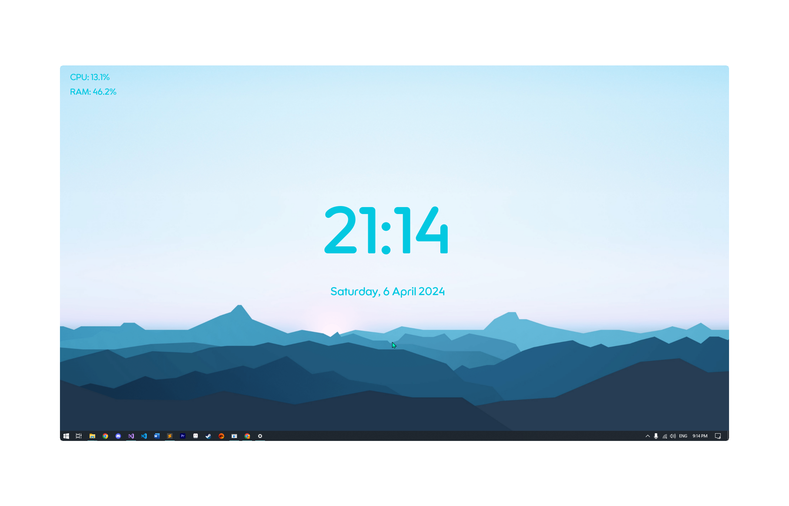

MyWidget
by Drimiteros
A new way to personalize your environment for all the Windows 10/11 users!

Make your desktop stand out with MyWidget! The app that aims to contain theultimate packet of unique and highly customisable widgets that are made up
from control panels, clocks, docks and more!